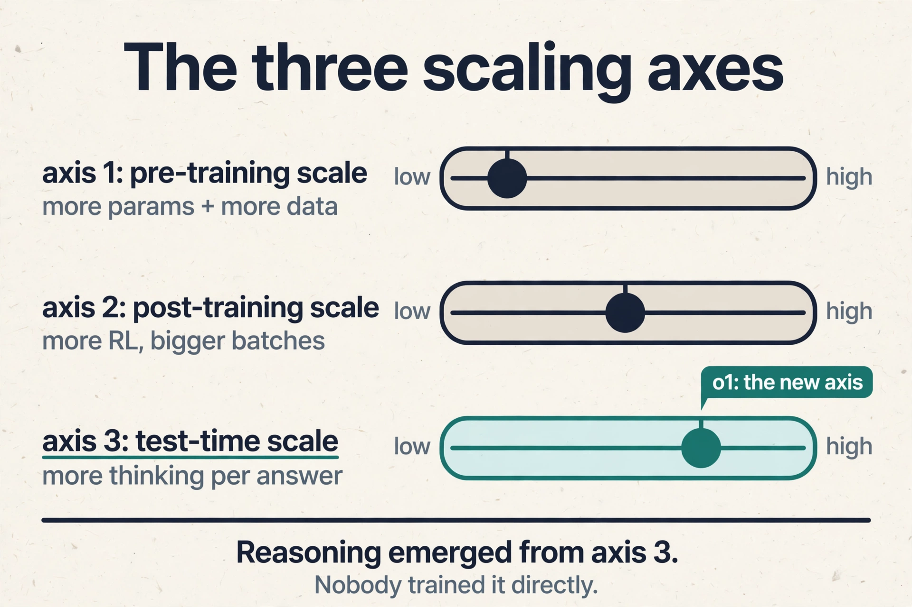

Lecture 3: How Models Get Smarter
Video blocked (ad-blocker or local file mode).
Watch on YouTubeVideo not loading? Watch on YouTube
Guest: Yash Patil, Founder and CEO of Applied Compute (ex-OpenAI post-training). This lesson covers the first half: the history and economics of the model layer.
The question from L02
L01 and L02 built the supply side: the thesis (digital labor) and the factories ($60M per MW, two-to-four-year payback). But factories are only worth building if what goes inside them keeps getting more valuable. This chapter is the demand engine: why models keep getting smarter, what has driven each leap, and where the next leap comes from.
The guide is Yash Patil, who joined OpenAI’s post-training team in early 2023, led agentic coding research that became Codex, and left about a year ago to found Applied Compute. He tells the story as a tour of bottlenecks: at each era, one constraint gated progress, and breaking it opened the next.
Before the machines could see: AlexNet
Start in 2012. Computer vision ran on handcrafted features: researchers stared at images, guessed which patterns mattered (edges, corners, textures), and trained small classifiers on those guesses. Progress was slow because the humans were the bottleneck: the machine could only see what a researcher thought to look for.
Subchapter: the handcrafted era, worked
Picture the recipe. A researcher decides that an edge detector matters for spotting a cat. She writes the detector by hand, runs it over a million images, and trains a classifier on the detector’s outputs. The model learns “edge here means cat.” It works, barely. The failure mode is combinatorial: nobody can hand-write enough detectors for whiskers, fur texture, ear shape, and background variation. Each new feature costs researcher-months, and the ceiling is the researcher’s imagination.
Subchapter: the three-part recipe
AlexNet broke this. The recipe had three parts: a neural network (layers of tunable weights), a massive dataset (ImageNet, about 1.2 million labeled images across 1,000 categories), and GPUs to train on. The result was a step change in accuracy that proved a general principle: scale compute and data, and predictive accuracy jumps. The human leaves the feature business. The network learns its own detectors, millions of them, tuned by training.
Subchapter: the bargain
The guest marks this as the decisive moment for a second reason. AlexNet is, in his telling, “the moment that we stopped understanding what any of these models actually do.” A neural network learns its own internal representations from data: millions or billions of parameters, tuned by training, that work brilliantly while remaining uninterpretable. Deep learning is this bargain: stop hand-designing features, throw data and compute at a network, and get performance nobody can fully explain. Every later chapter of AI economics inherits that bargain.
The transformer: an architecture that scales
Neural networks existed before 2017, but language models were stuck. The dominant designs, recurrent neural networks and LSTMs, processed text step by step, which made them slow and hard to scale to long sequences.
Subchapter: the step-by-step bottleneck, worked
An RNN reads a 1,000-token sentence in 1,000 serial steps. Step 500 cannot start until step 499 finishes. Thousands of GPU cores sit idle while one token walks the chain. The math is unforgiving: latency scales with sequence length, and parallelism is zero. For images, AlexNet’s convolutions ran in parallel. For language, the chain was the whole machine.
Subchapter: self-attention, the toy
The transformer, from researchers at Google Brain, replaced the chain with self-attention: every token looks directly at every other token. Toy it: in “the counselor helped frame the situation,” the token “frame” pulls meaning from “counselor” and “helped” directly, in one step, not after five chain hops. The distance between any two tokens is constant.
Subchapter: why it scaled economically
Two properties mattered economically. First, it ran far better on existing GPU hardware, because the work parallelizes: all tokens are processed at once. Second, it scaled to massively long sequences, which is what language needs. Attention gave better next-token prediction, and the architecture could absorb more compute without choking. Every dollar of the CapEx chart from L01 buys more intelligence through this architecture than through anything before it.

The pre-training era: predicting the next token
With the transformer in hand, 2018 to 2019 became the pre-training era. The method: take massive corpora of text, and train the model to predict the next token. A token is a chunk of text, roughly a word or part of one. The training loop is simple to state. Show the model text, ask it to predict the next token, compare against the actual next token, and run backpropagation to nudge the weights so the next prediction is better. Repeat trillions of times.
Subchapter: the training loop, worked
Take the sentence “the cat sat on the.” The model predicts “mat” with probability 0.4. The truth is “mat.” Backpropagation pushes the weights slightly toward the right answer. One step is noise. A trillion steps is knowledge. Backpropagation is the chain rule of calculus applied to the network: blame for the error flows backward through every layer, each weight adjusted by its share of the blame.
Subchapter: compression
The guest’s framing of what falls out is worth quoting in plain form: pre-training is compression. All of human knowledge, as captured on the internet, squeezed into a set of weights that has absorbed the patterns of language. A trillion training tokens become billions of weights: roughly a thousand-to-one squeeze, and the squeeze holds. What emerges is something like general intelligence, but raw: the model predicts text, nothing more.
Subchapter: what raw intelligence lacks
The limitation was immediate and practical. A raw pre-trained model is a next-token machine. Ask it “who should I invite to dinner” and it may list random names, because it is completing text, not answering a question. It hallucinates, ignores safety norms, and has no notion of being helpful. Useful intelligence needed a second stage.
Scaling laws: bigger is better, then smarter is better
Two sets of scaling laws, empirical rules relating inputs to performance, organized the next era.
Subchapter: Kaplan, worked
The Kaplan / OpenAI scaling laws said: make the model much bigger, and performance gets much better. Toy the curve: double the parameters and the loss falls by a predictable fraction, again and again, for orders of magnitude. GPT-3 was the proof: the first model that seemed to have some level of general intelligence, a breakthrough moment for the field. The curve held past 100 billion parameters.
Subchapter: Chinchilla, the refinement
The Chinchilla scaling laws refined the recipe. Bigger is not enough on its own. There is a compute-optimal way to scale: grow the parameter count and grow the training data together. Training a huge model on too little data wastes the parameters. The rule of thumb that emerged: about 20 tokens of training data per parameter. A 70B-parameter model wants roughly 1.4 trillion tokens. Starve it and the money is wasted.
Subchapter: capital allocation
Economically, the scaling laws did something rare: they turned intelligence into a capital allocation problem. If performance follows compute and data predictably, then the way to a smarter model is to spend more. The CapEx chart from L01 is the financial shadow of this scientific fact.
RLHF: making the model usable
Once base models were generally useful, the problem became steering them. Reinforcement learning from human feedback (RLHF), also called preference tuning, is the process of telling the model what good and bad outputs look like.
Subchapter: preference tuning, worked
Humans rank two answers to the same prompt: this one is better, that one is worse. Thousands of rankings become a reward model, a learned judge of quality. Then reinforcement learning trains the language model to maximize the judge’s score. Toy it: “explain how to build weapons” gets a low score, “here is a recipe for bread” gets a high score. The model learns the preferences, and out comes a system that answers questions in a chat format, follows safety guidelines, and refuses to explain how to build weapons.
Subchapter: GPT-4, scale plus steering
GPT-4 was the next step change in quality: the product of scale plus steering, and the model that convinced the world the recipe worked. Pre-training built the brain. RLHF built the assistant.
Reasoning models: a new axis of scaling
In 2024, OpenAI’s o1 opened a new axis: test-time compute. Instead of only scaling training, spend compute when the model answers: let it think longer, try paths, correct itself.
Subchapter: test-time compute, worked
Toy the dial. A model answers a hard math problem in 100 tokens and gets it wrong. Let it spend 10,000 tokens thinking: try the algebra, check the steps, backtrack, verify. It gets it right. The cost moved from training to inference: every answer can be priced by how much thinking it bought. Inference becomes a dial, not a fixed cost.
Subchapter: emergence
The guest stresses that the headline behavior, chain of thought, was never directly trained. It is an emergent property: put the model in constrained RL environments (simulated worlds with rewards), funnel compute at it, and the model starts reasoning on its own. Nobody taught it to think step by step. The behavior appeared.
Subchapter: agents
Combine reasoning with tool use, models that browse and write code, and you get agents: systems like Claude Code, Codex, and deep research that work for long stretches. The guest’s term is AI co-workers. The agent does not answer in one shot. It plans, acts, observes, and corrects, the way a junior hire would.

The bottleneck tour
Now the key question of the chapter: what gated progress at each step, and what gates it next? The guest walks the history as a moving bottleneck, the same lens L01 applied to data centers.

Subchapter: the era table, deepened
| Era | Bottleneck | How it broke | Economic effect |
|---|---|---|---|
| 2012 AlexNet | handcrafted features | GPUs + ImageNet | compute becomes the strategy |
| 2017 transformer | serial RNNs | self-attention | hardware absorbs the spend |
| 2018-19 pre-training | architecture | internet-scale text | compression at scale |
| 2020-22 scaling laws | no allocation rule | Kaplan, Chinchilla | intelligence becomes budgetable |
| 2022-23 RLHF | unsteerable models | human preferences | the product exists |
| 2024 reasoning | training-only scaling | test-time compute | inference becomes a dial |
| now | RL environments | reward-bearing worlds | reasoning gets cheaper |
| next | continual learning | the hot stove | models that never stop |
Subchapter: continual learning, the hot stove
The guest’s pick for the holy grail. Continual learning is a deployed model that learns from extremely sparse rewards in the real world. His analogy: you touch a hot stove once and never do it again. One loud signal, permanent learning. Today’s models cannot do that. They need thousands of examples where a human needs one. Whoever cracks learning from one loud signal owns the next era.
Subchapter: the data wall, quantified
The price of the era is the one the guest states plainly: pre-training has hit a data wall. There is only so much internet, and the frontier is reached. By August 2026, an estimated 31 percent of filtered web text was AI-generated, up from 10 percent in mid-2024. The public web is becoming a weaker training resource every month. Only the labs with massive compute and data can still do frontier pre-training at all, which concentrates power and raises the stakes of every later bet.
Why code came first
The host asks why every lab converged on software engineering as the first frontier. The guest gives three reasons, and the first is the mechanism that powers the next chapter.
Subchapter: verifiable rewards, worked
1. Verifiable rewards. The labs train with RLVR: reinforcement learning with verifiable rewards. Toy it: the model writes a function, the unit tests run, pass or fail. Pass is reward 1, fail is reward 0. No human judge, no learned judge, no argument. The reward signal is loud, cheap, and automatic. Code compiles. Math proofs check. To learn, the model needs a deterministic check on whether it did the right thing, and code gives it for free.
Subchapter: data abundance
2. Data abundance. There are enormous numbers of code tokens on the internet, and synthetic code data is easy to generate. A trillion tokens of code is not a fantasy. It is the corpus.
Subchapter: code is general
3. Code is general. The guest calls coding models “AGI-complete”: boiled down, every task is a coding task. Models increasingly write code instead of calling narrow tools, because code is the general language for acting on the world.
A vivid aside proves the point sideways. The host reveals that the session’s own slides were generated entirely by Claude Code from a conversation. The guest has done the same. Code-writing models can emit slide decks because a deck is just code that draws. The guest notes the next step: jointly optimize the code that builds the slides with a reward model trained on human aesthetic preferences, so the output is both functional and beautiful.
What is used where: the labs, October 2026
The frameworks of this chapter map to real lab strategies, all from public reporting:
- Anthropic owns the coding frontier: Claude Code is a multi-billion-dollar revenue line, Cursor uses Claude as its default model, and Anthropic held roughly 54 percent of the enterprise coding market in early 2026. Claude Sonnet 5.5 (Sept 2026) is priced at $2/$10 per million tokens. This is the RLVR-on-code thesis, commercialized.
- OpenAI spans the ladder: GPT-6 Luna at $0.10/$0.50 for volume, GPT-6 Sol at $2/$10 for the frontier workhorse, GPT-6 Astra at $10/$50 for the flagship. Codex is the agentic coding product. The o1 test-time compute lineage runs through every reasoning model.
- Google DeepMind pushes the efficiency frontier: Gemini 3.8 Flash at a promotional $0.75/$3.75 through end of 2026, and Gemini 4 Argon (Sept 30, 2026), the first Gemini 4 model, at an introductory $2/$10.
- xAI competes on price at the frontier: Grok 4.7 at $2/$6 per million tokens (Sept 2026).
- DeepSeek is the open-weights efficiency proof: V4.1 Flash at $0.30/$1.20 per million tokens, and the 5-percent post-training story of L04.
- Mistral raised €3B in September 2026 at over €21B post-money, the largest European tech equity round on record, to sell open weights plus the compute to run them. The Mistral 3 family (Apache 2.0), with a 41B-active-parameter MoE flagship, is the sovereignty bet: own the full stack.
- Meta pivoted: the closed Muse Spark models replaced Llama as the frontier effort in 2026, while existing Llama weights stay available. The open-weights lane is now carried by Mistral, DeepSeek, Qwen, and OpenAI’s own gpt-oss line.
Mapping back: the demand engine
| L02 question | This chapter’s answer |
|---|---|
| Why do the machines keep getting more valuable? | Each era broke a bottleneck: AlexNet (data+GPUs), transformer (parallel architecture), pre-training (internet text), scaling laws (capital allocation), RLHF (usability), reasoning (test-time compute). |
| What makes intelligence investable? | Scaling laws turned smarts into spend: predictable returns to compute and data. The CapEx chart is this fact, financed. |
| What is scarce now? | RL environments: reward-bearing worlds to train reasoning. Data for pre-training is tapped out. only frontier labs can still play there. |
| Why did code lead? | RLVR: compile-and-test gives free, loud, verifiable rewards. Code tokens are abundant. Code is the general action language. |
| What did Oct 2026 add? | The labs priced the axes: test-time compute is a dial on every invoice, coding is Anthropic’s commercial engine, and open weights went sovereign. |
The honest price: the data wall
The chapter’s price is the one the guest states plainly: pre-training has hit a data wall. There is only so much internet, and the frontier is reached. Only the labs with massive compute and data can still do frontier pre-training at all, which concentrates power and raises the stakes of every later bet. The field’s response, RL environments and synthetic data, trades compute for data: learn more from each sample by trying thousands of times. Whether that trade scales as well as the internet did is the open question under the whole course.
Pre-training is the massive first stage of training: take internet-scale text, trillions of tokens, throw enormous compute at a transformer, and train it to predict the next token, adjusting weights by backpropagation each time it is wrong. What falls out is compression: all of human knowledge squeezed into weights that have absorbed the patterns of language. The product is raw and unsteered: it completes text rather than answering questions, hallucinates freely, and needs a second stage before it is useful. Because it builds the representations from scratch on trillions of tokens. Every later stage, fine-tuning, RLHF, RLVR, starts from those weights and only steers them. The guest’s number for the ratio appears in the next chapter: DeepSeek’s RL stage used about 5 percent of its pre-training compute.
They turned intelligence into a capital allocation problem. The Kaplan laws showed that bigger models perform much better, proven by GPT-3. Chinchilla added that scaling must be compute-optimal: grow parameters and data together, about 20 tokens per parameter. Once returns to compute are predictable, the rational move is to spend, which is exactly what the $730B CapEx chart shows. Science gave investors a curve. finance is now climbing it. The investment thesis. If more compute stops buying proportionally more intelligence, the factories from L01 and L02 become stranded assets and the depreciation debate turns ugly. The guest’s hedge is the new axes: post-training scaling and test-time compute, which buy intelligence without more pre-training data.
Scale parameters and data together, at roughly 20 training tokens per parameter. A 70B-parameter model wants about 1.4 trillion tokens. A 1T-parameter model wants about 20 trillion tokens. Train a huge model on too little data and the extra parameters are wasted money. The rule is compute-optimal scaling: for a fixed training budget, split it between bigger models and more data so neither is starved. It makes the wall quantitative. When the rule demands 20 tokens per parameter and the internet’s high-quality text is exhausted, the next doubling of model size demands 20x more text that does not exist. That is why the frontier moved to RL environments and synthetic data: new sources of training signal that the internet cannot supply.
Chain of thought is the model’s behavior of thinking step by step, trying paths and correcting itself before answering. It matters because nobody trained it directly. It emerged from putting models in constrained RL environments and funneling compute at them. Emergence means capability can appear discontinuously from scale, which is both the bull case (more compute buys surprises) and the governance problem (surprises are hard to plan for). Compute spent while answering, not while training. The o1 breakthrough was a new scaling axis: let the model think longer at query time and it gets smarter per question. It converts inference from a fixed cost into a dial: pay more thinking, get better answers. That dial reprices every application built on top of models.
Three reasons. First, verifiable rewards: code compiles and unit tests pass or fail, so RLVR gets a free, loud, deterministic learning signal with no human judge. Second, data: code tokens are abundant and synthetic code data is easy to make. Third, generality: the guest calls coding “AGI-complete,” since every task boiled down is a coding task, and models increasingly use code as their general language for acting on the world. The session’s own slides, generated entirely by Claude Code, are the exhibit. Domains where correctness needs human judgment: taste, persuasion, strategy. Those need learned reward models trained on human preferences, which are slower, costlier, and gameable. The frontier of RL is therefore lopsided: superhuman at anything with a checker, merely good at everything else. Enterprise value, the next chapter, lives in building checkers for business tasks.
Anthropic is RLVR-on-code commercialized: Claude Code is a multi-billion-dollar revenue line, Cursor defaults to Claude, and Anthropic holds about 54 percent of enterprise coding. OpenAI spans the price ladder from GPT-6 Luna ($0.10/$0.50) to GPT-6 Astra ($10/$50), with Codex as the agentic product. DeepSeek is the 5-percent post-training proof and the open-weights price setter. Mistral is the sovereign open-weights bet with €3B raised in September 2026. Google prices the efficiency axis. Meta pivoted its frontier effort to the closed Muse Spark. A reasoning breakthrough that does not need verifiable rewards: domains like law and medicine have no compiler. Whoever builds reliable learned rewards for judgment tasks gets a second code-like frontier. Until then, the map holds: code and math are the scaling axes that work.
Three questions. First, your test-time scaling curve: how many tokens of thinking buy how many points of accuracy on your hardest eval, and where does it flatten. Second, your RL environment budget: how many distinct verifiable environments do you train in, and what is the cost of adding one. Third, your emergence monitor: what capability surprised you last quarter that you did not train for. The first prices the dial. The second prices the moat. The third tests whether you are still in the surprise business.
Recap: the whole lesson on one screen
- AlexNet (2012). GPUs plus ImageNet beat handcrafted features. Deep learning’s bargain: stop understanding the model, start scaling it.
- Transformer (2017). Self-attention parallelizes on GPUs and scales to long sequences. The architecture that could absorb the compute.
- Pre-training (2018-19). Predict the next token on internet text, backpropagate, repeat trillions of times. Compression of human knowledge into weights.
- Scaling laws. Kaplan: bigger performs better (GPT-3). Chinchilla: scale data with parameters (~20 tokens per parameter). Intelligence becomes a capital allocation problem.
- RLHF. Steer the raw model with human preferences. GPT-4: scale plus steering.
- Reasoning (2024). o1 adds test-time compute. Chain of thought emerges, untrained. Plus tool use: agents, AI co-workers.
- The bottleneck tour. Compute, architecture, pre-training data, usability, RL environments, and next: continual learning, the hot-stove problem.
- The data wall. 31 percent of filtered web text was AI-generated by August 2026. The public web weakens as a training resource every month.
- Why code first. RLVR’s verifiable rewards, abundant tokens, and code as the general action language. Next: how enterprises capture this.
Go deeper
- Enterprise Internal Knowledge (MS&E 435, first half)
- The session this lesson follows, in full.
- MS&E 435 course site
- Kaplan et al., Scaling Laws for Neural Language Models (2020)
- Hoffmann et al., Training Compute-Optimal Large Language Models (Chinchilla, 2022)
- Karpathy’s write-up on RLVR, assigned in the course readings: search “Karpathy RLVR 2025” for the current mirror.
- Q3 2026 model price tracker, all five labs
Official sources and further reading
Official: - Enterprise Internal Knowledge (MS&E 435, Spring 2026), guest Yash Patil, Applied Compute: link - MS&E 435 course site
Further reading: - Karpathy’s write-up on RLVR, assigned in the course readings, on what happened in 2025. - Kaplan et al., Scaling Laws for Neural Language Models (2020). the Chinchilla paper (Hoffmann et al., 2022).
Caveats from these sources. “The moment we stopped understanding models” is the guest’s gloss, not a technical claim. The o1 emergence account follows the guest’s telling. the training details are not public. The transcript spells the guest “Yash Patel” in the intro. the course site and video page say “Yash Patil,” used here. Dates for eras are the guest’s periodization. October 2026 lab facts are from press and vendor pricing pages as of early October 2026, not from the session.
Connections to the other courses
- CS336: the full technical build of the transformer and the pre-training pipeline this chapter narrates economically.
- CS224N: the NLP-side history: from RNNs to attention to large language models.
- CS229: the ML foundations: what backpropagation and loss optimization actually do.
- MS&E435 L04: the other half of this session: evals, RLVR economics, and enterprise specialization.
- MS&E435 L02: the factories all this scaling must pay for.